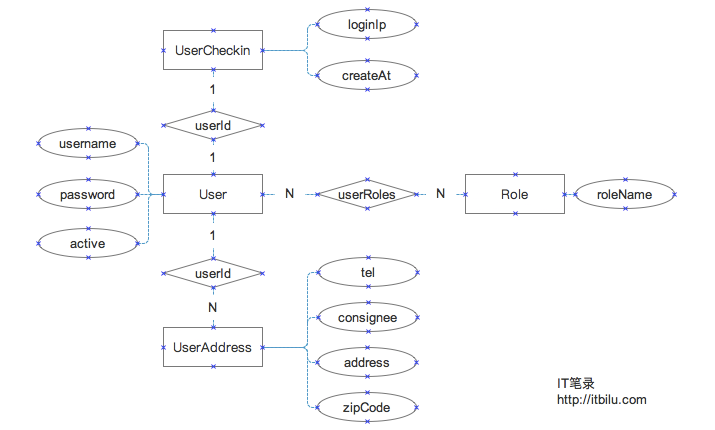

user.update 调用
hooks: {
beforeUpdate(user, options, next) {
bcrypt.genSalt(10, (err, salt) => {
bcrypt.hash(user.password, salt, null, (error, hash) => {
user.password = hash;
next(null, user);
});
});
},
},
##sequelize 事务
return db.lakalaSequelize.transaction(t =>
Promise.map(sqlArray, (sql, index) => db.lakalaSequelize.query(sql,
{ type: db.lakalaSequelize.QueryTypes.SELECT, transaction: t })
.then((result) => {
if (!_.isEmpty(result)) {
const item = itemArray[index];
item.BUSINESS_NAME = result[0].business_name;
item.MERCHANT_CODE = result[0].merchant_code;
item.MERCHANT_ADDR = result[0].MERCHANT_ADDR;
return item;
}
return itemArray[index];
}))).then(result => result);
Sequelize 外键
数据库中的表之间存在一定的关联关系，表之间的关系基于主/外键进行关联、创建约束等。关系表中的数据分为1对1(1:1)、1对多(1:M)、多对多(N:M)三种关联关系。
在Sequelize中建立关联关系，通过调用模型(源模型)的belongsTo、hasOne、hasMany、belongsToMany方法，再将要建立关系的模型(目标模型)做为参数传入即可。这些方法会按以下规则创建关联关系：
hasOne - 与目标模型建立1:1关联关系，关联关系(外键)存在于目标模型中。详见：Model.hasOne()
belongsTo - 与目标模型建立1:1关联关系，关联关系(外键)存在于源模型中。详见：Model.belongsTo()
hasMany - 与目标模型建立1:N关联关系，关联关系(外键)存在于目标模型中。详见：Model.hasMany()
belongsToMany - 与目标模型建立N:M关联关系，会通过sourceId和targetId创建交叉表。详见：Model.belongsToMany()
用户(User)－与其它模型存在1:1、1:N、N:M
用户登录信息(UserCheckin)－与User存在1:1关系
用户地址(UserAddress)－与User存在N:1关系
角色(Role)－与User存在N:M关系

module.exports = function (sequelize, DataTypes) {
return sequelize.define('User', {
id:{type:DataTypes.BIGINT(11), autoIncrement:true, primaryKey : true, unique : true},
username: { type: DataTypes.STRING, allowNull: false, comment:'用户名' },
password: { type: DataTypes.STRING, allowNull: false, comment:'用户密码' },
active: { type: DataTypes.BOOLEAN, allowNull: false, defaultValue: true, comment:'是否正常状态' }
},
{
timestamps: true,
underscored: true,
paranoid: true,
freezeTableName: true,
tableName: 'user',
charset: 'utf8',
collate: 'utf8_general_ci'
});
}
module.exports = function (sequelize, DataTypes) {
return sequelize.define('UserCheckin', {
id: { type: DataTypes.BIGINT(11), autoIncrement: true, primaryKey: true, unique: true },
userId: {
type: DataTypes.BIGINT(11),
field: 'user_id',
unique: true,
references: {
model: 'User',
key: 'id'
},
comment:'用户Id' },
loginIp: { type: DataTypes.STRING, field: 'login_ip', allowNull: false, defaultValue: '' , validate: {isIP: true}, comment:'登录IP'}
},
{
underscored: true,
timestamps: true,
tableName: 'userCheckin',
comment: '用户登录信息',
charset: 'utf8',
collate: 'utf8_general_ci',
indexes: [{
name: 'userCheckin_userId',
method: 'BTREE',
fields: ['user_id']
}]
});
}
module.exports = function (sequelize, DataTypes) {
return sequelize.define('UserAddress', {
id: { type: DataTypes.BIGINT(11), autoIncrement: true, primaryKey: true, unique: true, comment:'主键' },
userId: {type: DataTypes.BIGINT(11), field: 'user_id', allowNull: false, comment:'用户Id' },
consignee : { type: DataTypes.STRING, field: 'consignee', allowNull: false, comment:'收货人' },
address: { type: DataTypes.STRING(1024), field: 'address', allowNull: false, comment:'详细地址' },
zipCode: { type: DataTypes.STRING(16), field: 'zip_code', allowNull: true, comment:'邮编' },
tel: { type: DataTypes.STRING(32), field: 'tel', allowNull: false, comment:'电话' },
},
{
underscore: true,
timestamps: false,
freezeTableName: true,
tableName: 'userAddress',
comment: '用户地址表',
charset: 'utf8',
collate: 'utf8_general_ci',
indexes: [{
name: 'userAddress_userId',
method: 'BTREE',
fields: ['user_id']
}]
});
}
User模型与UserAddress存在1:N的关联关系，但在这样我们并没有用references特性显式的指定外键。这是因为，Sequlieze不仅可以在模型定义时指定外键，还可以在建立模型关系时指定，甚至主外键关系并不需要显示的存在，只要在建立模型关系时指定关联键即可。
module.exports = function (sequelize, DataTypes) {
return sequelize.define('Role', {
id: { type: DataTypes.BIGINT(11), autoIncrement: true, primaryKey: true, unique: true, comment:'角色Id' },
roleName: { type: DataTypes.STRING, field: 'role_name', comment:'角色名' }
},
{
underscored: true,
timestamps: false,
freezeTableName: true,
tableName: 'role',
charset: 'utf8',
collate: 'utf8_general_ci'
});
}
Role模型与User存在N:M的关系，这样就需要两者通过一个关系表（关系模型）进行关联。但并不需要手工建立这个关系表，指定关联关系后Sequelize会自动创建关系表。
注意：在上面定义模型时，我们使用了comment属性添加字段描述。经测试及查看Sequlize源码，这一特性并不会向数据中添加相关描述信息，但仍然建议添加这一属性以增强代码的可读性。
1.3 模型关联与数据库同步
定义好模型后，就可以建立模型关联关系，并将模型及关系同步到数据库中。
模型导入
在上面定义模型时，我们每个模型定义为了单独的文件，这样就需要通过sequlize.import()方法导入模型：
var sequelize=require('./_db').sequelize();
var User = sequelize.import('./user.js');
var UserCheckin = sequelize.import('./userCheckin.js');
var UserAddress = sequelize.import('./userAddress.js');
var Role = sequelize.import('./role.js');
关系建立
导入后，建立模型关系：
// 建立模型之间的关系
User.hasOne(UserCheckin);
UserCheckin.belongsTo(User);
User.hasMany(UserAddress, {foreignKey:'user_id', targetKey:'id', as:'Address'});
User.belongsToMany(Role, {through: 'userRoles', as:'UserRoles'});
Role.belongsToMany(User, {through: 'userRoles', as:'UserRoles'});
在定义UserAddress模型时，我们没有定义关联模型，所以需要在hasMany()方法中通过foreignKey和targetKey来指定关联关系(主外键关系)，指定后该关系同样会被同步到数据库中。除指定关联关系外，我们还指定了as选项，该选项表示“别名”，目标模型会混入到源模型后会使用该名称。
通过belongsToMany()方法建立Role与User之间的关系时，设置了through选项，该选项表示“关系”（可以是一个模型或字符串，使用字符串时表示在数据库中表名）。
同步数据库
建立关联关系后，调用sequelize.sync()方法即可以将模型及关联关系同步到数据库中。
async function updateLayerStyle(layerUUID, style) {
const result = Layer.update(
{
style
},
{
where: {
uuid: layerUUID
},
** returning: true, //返回结果
** ** plain: true //返回结果不带元数据
** }
)
.then(instance => instance[1].toJSON())
.catch((err) => {
const error = { error_code: 1000003, message: err };
throw error;
});
return result;
}